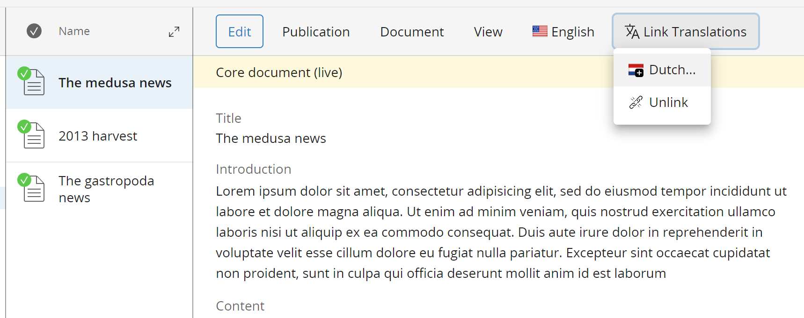

Bloomreach XM - Document Translation Picker
The document translation picker project provides a plugin to the CMS interface. It enables editors to pick existing documents as a translation for a document.
Usage
This plugin adds a menu 'Link Translations' to the menubar. A CMS user can use its subitems to open a dialog and select existing documents in translated folders. These documents will get the same, newly created, translationID as the current document. Also the user can choose to unlink to current document from any existing document.
